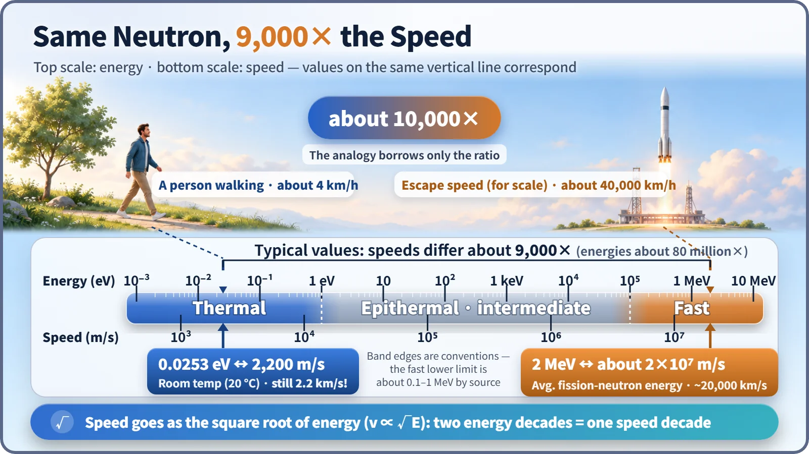
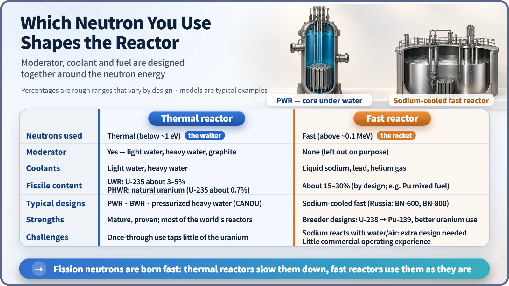

Nuclear Reactions & Fission · 041
A Stroll Versus a Rocket Launch — The Difference Between Thermal and Fast Neutrons
Even the slow neutron outruns a bullet. The fast one is about 9,000 times faster, and that gap splits reactor designs into two families.
A thermal neutron is a neutron that has slowed down until it is in thermal equilibrium with the material around it; a fast neutron is one freshly born in fission. At room temperature a thermal neutron carries about 0.0253 eV and moves at about 2,200 m/s, while a typical fission neutron carries about 2 MeV and moves about 9,000 times faster. Which of the two does most of the fissioning splits reactors into two families. [1]
Quick quiz: how slow is a "slow" neutron?
Spend any time around nuclear energy and you'll hear that "thermal neutrons are the slow ones." So how many meters per second does a "slow" thermal neutron travel inside a reactor? Bicycle speed? Highway speed?
The answer is about 2,200 meters per second. That's roughly 7,900 km/h, about twice as fast as a rifle bullet. If that counts as slow, how fast is the fast one? Let's sort out the two names we give neutrons according to their speed (or energy): thermal neutrons and fast neutrons.
Same neutron, different speed
A neutron is the electrically neutral particle found inside atomic nuclei. Every fission event throws out two or three of them, and at the moment they're born they are extremely fast. A neutron in that state is called a fast neutron. The average energy of a fission neutron is about 2 MeV (mega-electronvolts; an electronvolt is a tiny unit of energy used in the atomic world). Converted to speed, that's about 20,000 km per second: roughly 6.5% of the speed of light, fast enough to cross about 325 km (roughly the straight-line distance from Seoul to Busan) in about one-sixtieth of a second. [2]
Once that neutron has bumped into the surrounding material over and over and shed its speed, it settles at a typical energy of about 0.0253 eV at room temperature, close to 2,200 meters per second. That is a thermal neutron. Deliberately slowing fast neutrons with a material such as water is called moderation, and it deserves a story of its own.
There's a middle ground, too:
| Band | Approximate energy | What it is |
|---|---|---|
| Thermal | below about 1 eV | In equilibrium with the surrounding material |
| Epithermal (intermediate) | about 1 eV to 0.1 MeV | Neutrons that are still slowing down |
| Fast | above about 0.1–1 MeV | Freshly born fission neutrons |
These boundaries aren't drawn by the laws of nature. They're conventions, and textbooks place them a little differently. "Somewhere around here" is all you need to remember. [3]

A bullet train? Think rocket
Divide one speed by the other and you get about 9,000, nearly 10,000 times. Speed is proportional to the square root of energy (v ∝ √E), so an energy gap of about 80 million times becomes a speed gap of about 9,000 times, its square root.
Let's translate 10,000 times into everyday speeds. A person out for a walk moves at about 4 km/h. You might guess that a bullet train would cover the gap, but a 300 km/h high-speed train is only about 75 times faster than a stroll. To reach 10,000 times you need about 40,000 km/h, which is roughly the speed needed to break free of Earth's gravity (Earth's escape velocity, about 11.2 km per second). If a thermal neutron is a neighbor out for an evening walk, a fast neutron is a rocket leaving the planet.
So why call it "thermal"?
"Thermal" sounds hot and dangerous, but a thermal neutron is actually the slowest neutron in the reactor, the one that has "cooled down."
The secret is thermal equilibrium. The atoms in water or graphite are never still; they jiggle constantly, more or less vigorously depending on temperature (thermal motion). After a neutron has collided enough times, it stops losing energy in one direction only. In some collisions it loses a little, in others it gains a little, and it falls into step with the thermal motion of the atoms around it. A neutron in thermal equilibrium with the surrounding material is a thermal neutron.
That's why a thermal neutron's energy isn't a single number but a spread that shifts with temperature. The 0.0253 eV figure is the typical value at 20 °C. Inside a light water reactor, where the coolant is at about 300 °C, the typical energy rises to about 0.05 eV. [3]
Slow or fast? Where reactor designs part ways
The distinction matters because the chance that a neutron triggers fission depends strongly on its energy. For uranium-235, a thermal neutron is hundreds of times more likely to cause fission than a fast neutron (physicists measure this likelihood with a quantity called the cross section). So reactors split into two broad families, depending on which neutrons do most of the fissioning. [4]
Thermal reactors deliberately slow neutrons down with a moderator such as water (light or heavy) or graphite. Pressurized water reactors, the most common type in South Korea and worldwide, and CANDU heavy-water reactors belong to this family, as do most of the world's power reactors. Because fission is so likely, they can run on low-enriched fuel with about 3–5% uranium-235, and a heavy-water reactor can even use natural uranium at 0.7%. Decades of technology and operating experience are another strength. The trade-off: uranium-238, which makes up most of natural uranium, is only partly converted into plutonium and used, so in a once-through fuel cycle most of it is left untouched and resource use is limited. [5]
Fast reactors do the opposite. They leave out the moderator and use fast neutrons as they are. Because water slows neutrons down, they are cooled by liquid sodium, lead or helium gas instead. Since fission is less likely at high energy, the share of fissile material in the fuel (uranium enrichment or plutonium content) has to be raised to roughly 15–30%, depending on the design. In return, some designs can "breed," turning uranium-238 into a new fuel, plutonium-239, which uses uranium resources far more thoroughly. On the other hand, sodium reacts violently with water and air, so sodium-cooled designs need dedicated systems to handle that, and commercial operating experience is limited to a handful of units such as Russia's BN-600 and BN-800. [6]
Rather than one being simply better, think of them as designs built for different goals.

Three easy mix-ups
"Thermal reactors have no fast neutrons." Not so. Almost all neutrons born in fission are fast. A thermal reactor slows them down and causes most of its fissions with thermal neutrons, but fast neutrons are always present too.
"The 'fast' in fast reactor means the reaction runs fast." No, it refers to the speed (energy) of the neutrons.
"Slow neutrons are practically standing still." At 2.2 km per second, they outrun a bullet. They're only slow compared with fast neutrons.
Key takeaways
Fast neutrons are freshly born in fission, about 2 MeV on average and about 20,000 km per second. Thermal neutrons are in thermal equilibrium with their surroundings, typically 0.0253 eV at room temperature and about 2,200 m per second. The speed gap is about 10,000 times, like a stroll versus a rocket leaving Earth. Thermal reactors slow neutrons down and fission with the slow ones; fast reactors skip moderation and fission with the fast ones.